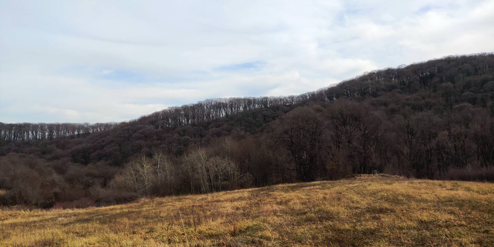
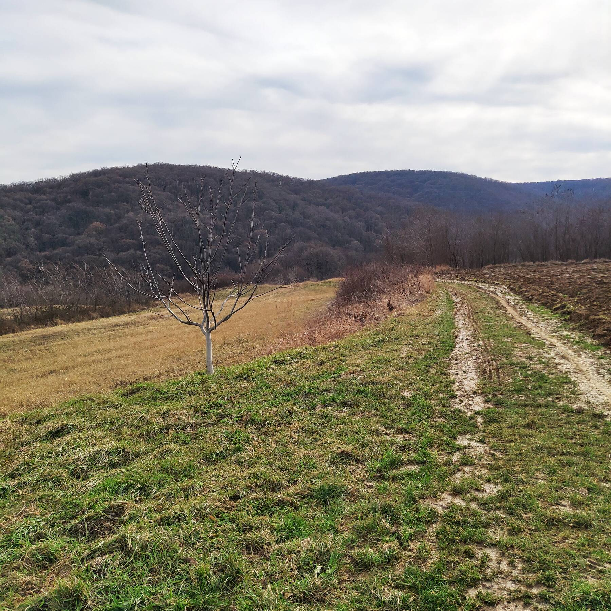
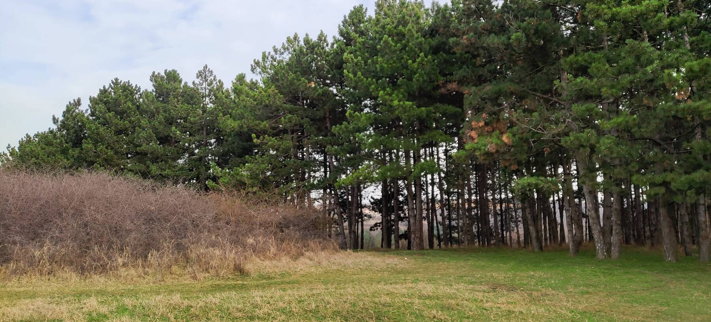

Где-то под Стражилово, говорят, есть сосновый бор. А на Сербщине чего не хватает — так это сосен. Нормальных таких, качественных сосен, как на Карельском перешейке или в Финляндии. Ну, мы и пошли искать...
Поднимались в гору от Стражилово. Утром почти никого на парковке, хозяин расположенного рядом ресторанчика сонно раскладывал скатерти на столах.
Вдоль Бранковой тропы стоят такие вот информационные стенды со стихами Бранко Радичевича. Но главное тут не это: в русском языке сколько слов для «дуба» есть? Одно? А у сербов — как минимум пять: цер, китняк, медунац, лужняк и, собственно, храст. Разбирают. Уважаю.

Тропу то и дело пересекает даунхильная трасса. Ваще кайф по такой катнуть, наверное. Только не на харде, местами слишком жёстко и корнясто.

По всей Фрушке расцвели подснежники. «Висибаба» по-местному. Натурально, целый ковёр из подснежников, и это ещё не все повылезли!


Небольшая «врезка» в нацпарк к югу от Белево.

Внезапно — настоящие дёрты! Стартовый стол на четыре гонщика, классный спуск вниз с трамплинами и бодрыми поворотами с контруклонами, ну и кочки, конечно. :) Но, к сожалению, никого. Странно, ведь выходной и погода хорошая...
Пишут, что построено из мусора, собранного на горе. Дескать, нефиг мусорить. Вот оно какое, современное искусство...

А вот и сосны! Нашлись. Немного, конечно, но я другого и не ожидал. Всё-таки здесь больше буковых и дубовых лесов, да на юге страны ёлочки растут.
Обратно пошли вниз вдоль Карловачкого потока, то и дело пересекая отличный даунхильный трек. Вот этот дропчик на картинке — высотой метра в три, например.
Это морозник зелёный (Helleborus viridis). Кто говорил, что не бывает зелёных цветов?

А это — многоножка обыкновенная (Polypodium vulgare). Интересна тем, что в русской википедии значится как ядовитое растение, а в английской — почти как съедобное, в кондитерском деле используют.


Водопадики на Карловачком потоке.
Вот эта зараза уничтожает здешние леса как чёрт знает что. Плющ обыкновенный. Обвивает дерево полностью, от корней до верхушки, и каюк. Дерево падает. Сам видел такие уничтоженные деревья под Обреновцем, вдоль Савы.
Камуфляжный бук.

Вернулись к машине — и не узнали места: толпы народу, ресторанчик забит до отказа, играет музыка, дети, пенсионеры. Правда, вся эта братия не отходит далеко от парковки, первые отдыхающие встретились за километр от парковки. Да... Фрушка — это тебе не вукоёбины Старой Планины. Но для погулять в выходной, не отходя далеко от дома — самое то.